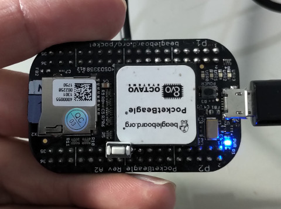
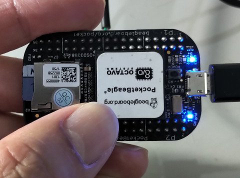

Linux Device Driver >> C/C++
tasklet
參考資訊：
1. Source Code
Linux Kernel將中斷處理切成top-half和bottom-half兩部份，top-half指的就是中斷副程式處理，而bottom-half指的就是延遲中斷副程式處理，如果事情可以快速處理完畢，就直接在中斷副程式裡處理就可以，如果無法立即完成(如：需要等待或者傳遞大量資料)，則可以排一個延遲處理的副程式，tasklet就是一種延遲處理中斷的機制，雖然是延遲處理，不過，tasklet也是執行在高優先級別的等級，因此，不適合處理太耗時的東西，因為，高優先級別的副程式，如果太耗時，將延後Context Switch的發生(單核心)，導致系統效能出問題，不過，bottom-half機制確實解決中斷阻塞問題
使用步驟：
1. tasklet_init()
2. tasklet_schedule()
3. tasklet_kill()
main.c
#include <linux/init.h>
#include <linux/device.h>
#include <linux/module.h>
#include <linux/delay.h>
#include <linux/kernel.h>
#include <linux/errno.h>
#include <linux/mm.h>
#include <linux/gpio.h>
#include <linux/interrupt.h>
MODULE_LICENSE("GPL");
MODULE_AUTHOR("Steward Fu");
MODULE_DESCRIPTION("Linux Driver");
#define BUTTON 27
struct tasklet_struct mytask={0};
void tasklet_handler(unsigned long data)
{
printk("%s\n", __func__);
}
static irqreturn_t irq_handler(int irq, void *arg)
{
tasklet_schedule(&mytask);
return IRQ_HANDLED;
}
int ldd_init(void)
{
int irq=0;
tasklet_init(&mytask, tasklet_handler, 0);
irq = gpio_to_irq(BUTTON);
if(request_irq(irq, irq_handler, IRQF_TRIGGER_RISING, "gpio_irq", NULL)){
printk("%s, failed to request irq(%d)\n", __func__, irq);
}
return 0;
}
void ldd_exit(void)
{
int irq=0;
irq = gpio_to_irq(BUTTON);
free_irq(irq, NULL);
tasklet_kill(&mytask);
}
module_init(ldd_init);
module_exit(ldd_exit);
ldd_init: 設定GPIO中斷以及tasklet延遲處理副程式
irq_handler: 安排一個tasklet延遲處理
tasklet_handler: 列印字串
ldd_exit: 釋放中斷資源以及刪除tasklet
完成


# tasklet_handler